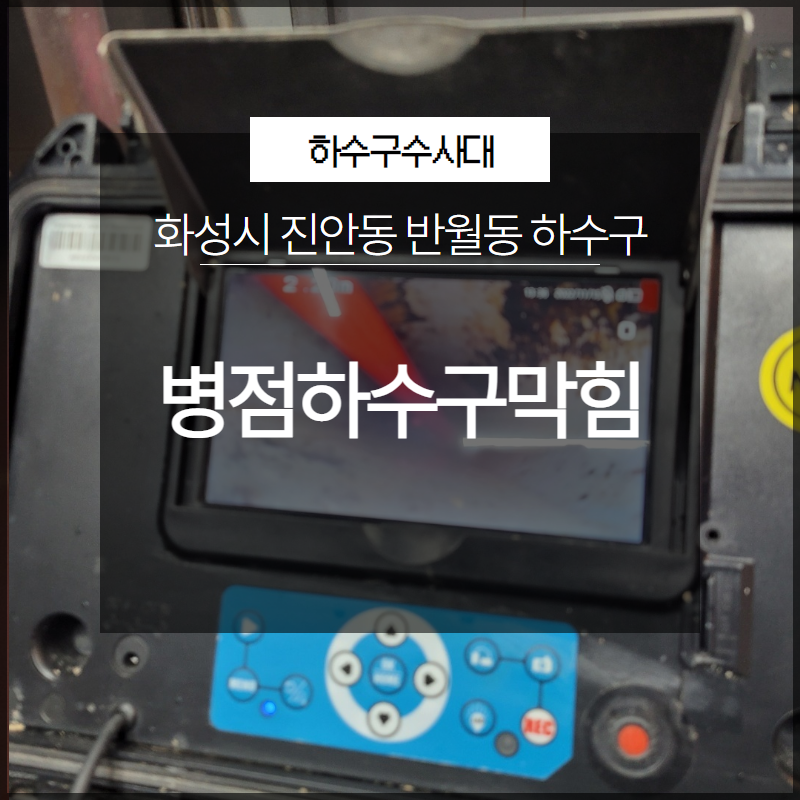
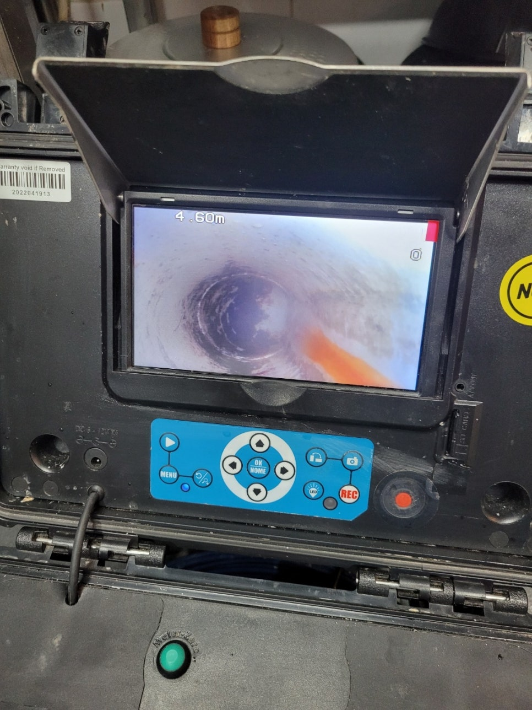

🏠 화성시 병점하수구막힘 진안동 반월동 하수구 배관 해결
화성 병점 싱크대막힘 전문 시공 후기

📋 작업 개요
- 위치: 화성 병점, 병점, 화성
- 서비스 유형: 싱크대막힘, 하수구막힘, 배관막힘, 역류해결, 고압세척
- 작업 일시: 2023. 5. 11. 17:51
- 업체명: 하수구수사대 (010-5615-2118)
🔍 문제 상황
안녕하세요. 하수구수사대입니다.
일상생활을 하다 보면 언제든지 발생을 할 수 있는 것이 바로 배관 막힘이라고 할 수 있습니다. 배관 막힘이 발생을 하게 되면 여러 가지로 생활을 하는 데 있어서 불편함을 가져올 수밖에 없는데요.
배관 막힘이 발생을 하게 되면 어떤 분들은 급한 마음에 원인이 무엇인지도 모르는 상태에서 혼자서 해결을 하려고 하다가 오히려 막힘이 심해지게 되면서 내부의 상태가 더 나빠지게 되는 결과를 가져오게 될 수 있습니다. 그러므로 배관 막힘을 보다 빠르고 신속하게 해결을 하기 위해서는 곧바로 전문 업체의 도움을 받는 것이 필요하다고 할 수 있습니다.
이번에 소개해드리고 자 하는 현장은

🔎 원인 분석
💡 전문가 진단: 이번에 소개해드리고 자 하는 현장은
화성시 병점하수구막힘 진안동 반월동 하수구 현장으로 상가에 있는 식당의 싱크대가 막히게 되면서 연락을 주신 곳이었습니다. 싱크대에서는 이미 역류와 함께 악취까지 발생을 하고 있는 상황이었는데요.
싱크대를 쓸 수 없는 상황이다 보니 빠른 해결이 필요한 곳이었습니다. 오늘은 화성시 병점하수구막힘 진안동 반월동 하수구 후기를 통해서 전문 업체에서는 배관 막힘을 어떻게 해결을 하게 되었는지를 알려드리도록 하겠습니다.
배관 막힘이 발생을 하게 되는 원인은
아주 다양한 상황들이 있을 수 있는데요. 이러한 문제를 해결하기 위해서는 가장 먼저 배관 막힘이 발생하게 된 원인을 제거를 하는 것이 필요하다고 할 수 있습니다. 배관이 막히게 되면 가장 먼저 당황하지 말고 전문 업체로 연락을 하시는 것이 필요한데요.
이번 현장의 경우도 싱크대가 막힌 후에 섣불리 고객님 혼자서 해결을 하고자 약품을 여러 번 시도를 해보았다고 합니다. 그러다 막힘이 해결이 되지 않고 오히려 역류까지 되다 보니 결국에는 저희 전문 업체 쪽으로 다시 연락을 주시게 된 상황이었습니다.

🔧 작업 과정
화성시 병점하수구막힘 진안동 반월동 하수구 현장에 도착을 해서 가장 먼저 배관 막힘의 원인을 파악하기 위한 배관 내시경을 작업을 하였는데요. 매일 많은 사람들의 음식을 준비하는 식당인 만큼 배관 막힘이 자주 발생을 할 수 있을 거라 생각하였습니다.
이런 곳의 경우는 정기적으로 전문 업체를 통해서 한 번씩 점검을 해주시는 것이 필요하다고 할 수 있는데요. 빠르게 현장의 상황을 해결하기 위해서 먼저 이물질 제거 작업을 시작하였습니다.
배관 내부에는 각종 음식물 찌꺼기들부터 덩어리들이 배관을 막고 있었기 때문에 흐름이 원활하지 못하였는데요 이러한 음식물 찌꺼기들은 시간이 지나면서 부패를 하게 되고 역류로 인해서 악취까지 발생을 하게 되는 것입니다.
배관 내시경을 통해서 내부의 상황을 파악한 후에
음식물 찌꺼기를 제거하기 위한 전문 장비 세팅을 하였습니다. 큰 이물질 덩어리들은 잘게 부수고 석션기를 이용해서 배관 벽이나 내부에 있는 이물질들을 모두 제거를 하는 작업을 하기로 하였습니다.
어떤 현장에서든 배관 막힘을 해결하기 위해서는 원인을 먼저 파악을 하고 그에 따른 적절한 장비를 이용해서 작업을 해야 해결이 되는 것입니다. 저희 하수구수사대는 오랜 노하우와 경력을 가지고 있는 배관 전문 업체인 만큼 현장의 상황에 맞는 전문 장비를 통해서 빠르고 정확하게 해결을 해드리고 있습니다.
내시경을 통해서 계속해서 이물질들의 위치를 파악하면서 내부에 있는 것들을 반복해서 제거하는 작업을 하였는데요. 이물질들이 모두 제거가 되면서 조금씩 물의 흐름이 다시 좋아지는 것을 확인을 하였습니다. 마지막으로 악취 제거를 위한 배관세척작업도 하였는데요.


✅ 작업 완료
원인이 되는 물질을 제거한 후
모든 현장의 상황을 마무리하였습니다.



⚠️ 주방 싱크대 배관 막힘 예방 수칙
- ✅ 기름기가 묻은 식기나 프라이팬은 설거지 전 키친타올로 반드시 기름때를 닦아내세요.
- ✅ 주기적으로 싱크대 개수대에 뜨거운 물을 가득 받아 한 번에 내려 배관 내부 기름을 씻어내세요.
- ✅ 배수구 거름망을 미세한 필터로 사용하시고 음식물 찌꺼기가 틈으로 새어 들지 않게 관리하세요.
- ✅ 베이킹소다와 식초를 뜨거운 물과 함께 일주일에 한 번씩 부어주면 배관 살균과 막힘 예방에 좋습니다.
💡 핵심 정리
- 확실한 장비 작업(내시경 점검 및 샤프트 스케일링)으로 원인을 뿌리 뽑습니다.
- 작업 후 1년 이내에 동일한 부위 재발 시 100% 무상 A/S 서비스를 보장합니다.
- 서울 · 경기 · 인천 전 지역에 24시간 언제든 긴급 출동할 수 있도록 항시 대기 중입니다.
❓ 자주 묻는 질문 (FAQ)
🚨 화성 병점 싱크대막힘 문제로 고민이신가요?
정확한 원인 진단과 확실한 시공으로 재발 없는 해결을 약속드립니다.
24시간 긴급 출동 | 서울 · 경기 · 인천 전지역 | 1년 내 재발 시 무상 A/S